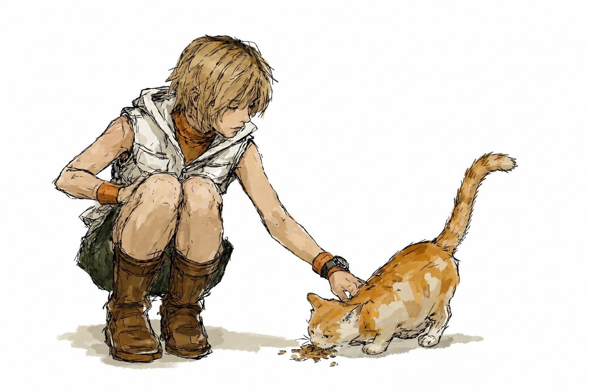

Weather Prediction
Localized weather forecasting platform for Homagama powered by a Python ML backend and a responsive glassmorphic dashboard.
✶CLOUD INFRASTRUCTURE · DEVOPS · SYSTEMS
> Managing cloud-native infrastructure & systems
> Automating deployment workflows & CI/CD pipelines
> Ensuring reliability through observability & robust delivery
Cloud Native
Provisioning VPC networks, IAM security policies, and workloads across AWS and Oracle Cloud (OCI).
DevOps
Packaging multi-tier applications with Docker and managing deployments using Kubernetes for scalable microservices.
GitOps
Automating build, test, and release cycles using GitHub Actions, version control (Git), and repeatable deployment strategies.
Operating Systems
Managing Linux environments, writing Bash/Fish automation scripts, configuring Systemd services, and handling network routing.
Infrastructure
Managing server configurations and cloud deployments through declarative code and automated provisioning.
Networking
Configuring DNS, reverse proxies, and routing edge traffic securely using Cloudflare Workers.
Engineering
Building RESTful microservices in Java and Node.js, alongside WebRTC for peer-to-peer communication.
SRE & Persistence
Designing schemas for MySQL (PL/SQL) and MongoDB. Monitoring system health through log analysis to ensure reliability.
